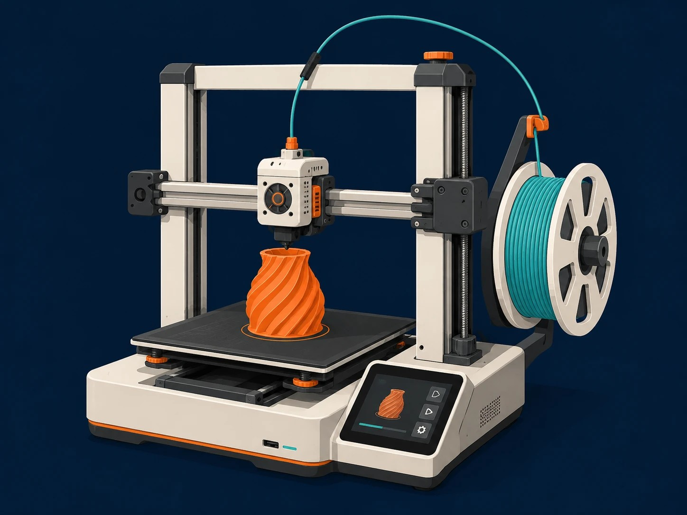
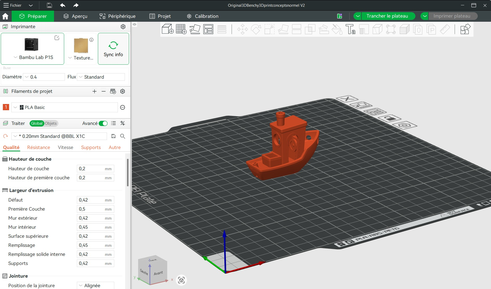

½ journée 01
L'impression 3D n'est pas une technologie de laboratoire. Un carreleur belge s'en est servi pour fabriquer les outils et les finitions qu'il ne trouvait nulle part. Cette première demi-journée te fait découvrir comment une machine fabrique un objet, ce qu'elle sait faire, ce qu'elle ne sait pas faire, et comment on lui parle. Tu n'as rien à savoir avant de commencer : tu vas regarder, manipuler, et voir un objet sortir de la machine.
À la fin de cette demi-journée, tu seras capable de :
Le but n'est pas de devenir technicien, mais de comprendre le processus complet : du fichier numérique à la pièce physique.
Titre
Quelqu'un l'a déjà fait
TilX est une marque belge née sur le terrain. Elle a été créée de A à Z par un carreleur, avec l'idée de concevoir des outils pensés sur chantier pour répondre aux vrais besoins des pros — des produits que l'on ne trouve nulle part ailleurs. Les pièces sont conçues par impression 3D professionnelle, testées et validées sur chantier, et fabriquées dans des matériaux comme le PETG ou le PLA.
Quelques exemples de la gamme : une plaque de commande à carreler pour WC suspendus, une trappe de visite discrète pour salle de bains, une box encastrable pour rouleau WC à fixation aimantée, ou encore un gabarit de percement avec aspiration intégrée pour percer le carrelage sans poussière.
Voir la gamme — carotools.com/69-tilx-design
Titre
Fabrication additive
FDM = Fused Deposition Modeling, modélisation par dépôt de matière fondue. C'est la technologie d'impression 3D la plus répandue et la plus accessible. Elle fabrique un objet réel en superposant des couches de plastique fondu, à partir d'un modèle numérique.
Le principe est l'inverse de ce que fait une meuleuse : au lieu d'enlever de la matière à un bloc, la machine en ajoute, couche après couche, uniquement là où c'est nécessaire.
Touche chaque point du schéma pour découvrir à quoi sert cette partie.

1 — Tête d'impression · 2 — Plateau chauffant · 3 — Écran de contrôle
Le filament est la matière utilisée en impression 3D : un fil plastique chauffé puis déposé couche par couche. Le filament choisi dans le logiciel doit toujours correspondre à celui chargé dans l'imprimante.
| Filament | Caractéristiques |
|---|---|
| PLA | Rigide et simple à imprimer. |
| PETG | Solide, légèrement flexible, résiste mieux à la chaleur. |
| TPU | Souple et élastique, revient en forme. |
Dans l'atelier, chaque machine est préchargée avec un matériau. Tu choisis ta machine en fonction du filament dont tu as besoin.
Titre
Bambu Studio
Touche un point de l'interface pour découvrir son rôle.

? — Qu'est-ce que le tranchage ? · 1 — Espace de travail · 2 — Choix de l'imprimante · 3 — Filament · 4 — Préparer le fichier · 5 — Bibliothèque
Les réglages du tranchage influencent la qualité, la vitesse et la solidité de l'impression. Dans cet atelier, tout est préconfiguré pour assurer un bon résultat.